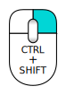

Contents
Nouveautés
- Notes de version 0.11 : Consultez les notes de version de FreeCAD 0.11
- Notes de version 0.12 : Consultez les notes de version de FreeCAD 0.12
- Notes de version 0.13 : Consultez les notes de version de FreeCAD 0.13
- Notes de version 0.14 : Consultez les notes de version de FreeCAD 0.14
- Notes de version 0.15 : Consultez les notes de version de FreeCAD 0.15
Avant-propos
FreeCAD est une application de modélisation paramétrique 3D CAD/CAE. Elle est principalement destinée à la conception mécanique, mais sert aussi à toutes les utilisations où vous avez besoin de modéliser des objets de précision et de contrôler l'historique de la modélisation 3D.
FreeCAD est toujours au stade de développement, donc, même si le logiciel offre déjà une longue liste (toujours croissante) de fonctions, une grande partie est toujours manquante, surtout en la comparant avec des solutions commerciales ; vous pourriez ne pas le trouver assez développé pour une utilisation de production. Pourtant, il bénéficie d'une croissance rapide et possède une communauté d'utilisateurs enthousiastes, et vous pouvez trouver de nombreux exemples de projets de qualité élaborés avec FreeCAD.
Comme tous les projets open source, le projet FreeCAD n'est pas un travail unidirectionnel livré par ses développeurs. Sa croissance dépend beaucoup de sa communauté, pour créer et tester ses fonctionnalités ainsi que sa stabilité (recherche et correction de bugs). Alors n'oubliez pas ceci lorsque vous commencez à utiliser FreeCAD, et si vous le souhaitez, vous pouvez directement influencer et aider le projet !
Installation
Tout d'abord (si ce n'est pas déjà fait) téléchargez et installez FreeCAD. Consultez la page téléchargement pour plus d'informations sur les mises à jour et versions actuelles, puis la page installation pour plus d'informations sur l'installation de FreeCAD. Il y a un installateur pour Windows (.msi), des paquets d'installation pour Ubuntu & Debian (.deb), openSUSE (.rpm) et Mac OSX. FreeCAD est open source, si vous êtes aventureux et curieux de connaître les toutes nouvelles caractéristiques en cours de développement, vous pouvez également récupérer le code source et compiler FreeCAD vous-même.
Explorer FreeCAD

- La vue 3D, affichant le contenu de votre document
- L'arborescence, qui montre l'historique et la hiérarchie de la construction de tous les objets dans votre document
- L'éditeur de propriétés, qui vous permet d'afficher et de modifier les propriétés de ou des objet(s) sélectionnés
- La vue rapport, (Menu > Affichage > Vues > Vue rapport) qui est la fenêtre où FreeCAD affiche des messages, avertissements, erreurs.
- La console Python, (Menu > Affichage > Vues > Console Python) où sont affichées toutes les commandes exécutées par FreeCAD (que vous pouvez réutiliser dans vos macros), et saisir du code python
- Le sélecteur d'atelier, où vous sélectionnez l'atelier à activer
Le concept principal de l'interface FreeCAD est qu'il est composé d'ateliers. Un atelier est une collection d'outils adaptés pour une tâche spécifique, comme travailler avec des maillages, faire du dessin 2D, ou faire des esquisses contraintes. Vous pouvez changer l'atelier actuel avec le sélecteur d'ateliers (6). Vous pouvez personnaliser les outils inclus dans chaque atelier, ajouter des outils provenant d'autres ateliers ou même créer vos propres outils, que nous appelons macros. Il y a aussi un atelier générique qui rassemble les outils les plus couramment utilisés appelé l'atelier complete (complet).
Lorsque vous démarrez FreeCAD pour la première fois, le Start center s'affiche :

Le Start Center (centre de départ) permet de passer rapidement à l'un des atelier les plus usuels, ouvrir un des fichiers récents, ou voir les dernières nouvelles du monde de FreeCAD. Vous pouvez modifier l'atelier par défaut dans l'éditeur de préférences.
FreeCAD propose quatre modes de navigation disponibles ; ceux-ci changent la façon dont vous utilisez votre souris pour interagir avec les objets dans la vue 3D et l'affichage lui-même. L'un d'eux est spécialement conçu pour les touchpads, où le bouton central de la souris n'est pas utilisé. Le tableau suivant décrit le mode par défaut, appelé 'CAD Navigation ' (vous pouvez modifier rapidement le mode de navigation actuel en faisant un clic-droit sur une zone vide de la vue 3D) :
| Selection | Pan (déplacement) | Zoom | Rotation | Rotation
Méthode alternative |
|---|---|---|---|---|

|

|

|

|

|
| Cliquez avec le bouton gauche de la souris sur l'objet que vous souhaitez sélectionner. Maintenez la touche CTRL enfoncée pour sélectionner plusieurs objets. | Cliquez sur le bouton central de la souris pour déplacer l'objet dans l'écran graphique | Utilisez la molette de la souris pour zoomer et dé-zoomer. Le réglage peut se faire dans "Édition → Préférences → Affichage → Vue 3D → Étape de zoom" | D'abord cliquez et maintenez le bouton central de la souris, puis cliquez sur le bouton gauche de la souris sur l'objet et faites-le glisser dans la direction souhaitée. Cela fonctionne comme une boule qui tourne autour de son axe. Si vous relâchez les touches avant l'arrêt de votre requête et si la fonction "Permettre l'animation" est cochée, l'objet poursuit sa rotation. Un double-clic avec le bouton central de la souris sur n'importe quelle partie d'un objet définit le nouveau centre de rotation et effectue un zoom en avant à partir de ce point. | D'abord cliquer et maintenez le bouton central de la souris, puis cliquez sur le bouton droit de la souris et faites glisser la souris dans la direction souhaitée. Cette méthode fonctionne comme décrite précédemment la rotation de l'affichage utilise le bouton central de la souris + le bouton gauche de la souris. Les utilisateurs qui utilisent la souris avec la main droite peuvent trouver cette méthode de rotation d'affichage plus facile que la méthode précédente. |

|
 | 
|
||
| Pour le mode déplacer, pressez la touche Ctrl pressez sur le bouton droit de la souris (rev 0.17) | Pour le mode Zoom, pressez les touches Ctrl et Shift pressez sur le bouton droit de la souris (rev 0.17) | Pour le mode Rotation, pressez la touche Shift pressez sur le bouton droit de la souris (rev 0.17) |
{kind=link}
Plusieurs vue prédéfinis (vue de dessus, vue de face, etc.) sont disponibles dans le menu Affichage, sur la barre d'outils ainsi que par des raccourcis sur le pavé numérique (1, 2, etc...). Un clic droit sur un objet ou sur une zone vide de la vue 3D vous donne un accès rapide à certaines opérations courantes, telles que la définition d'une vue particulière, ou localiser un objet dans l'arborescence.
Premiers pas avec FreeCAD
L'objectif de FreeCAD est de vous permettre de créer des modèles 3D de haute précision, de maintenir un contrôle serré de ces modèles (être capable de revenir en arrière dans l'historique de la modélisation et de modifier les paramètres) et finalement de construire ces modèles (via l'impression 3D, l'usinage CNC ou même les chantiers de construction). Il est donc très différent des autres applications 3D conçues pour d'autres fins, tels que le film d'animation ou les jeux. Sa courbe d'apprentissage peut être ardue, spécialement si c'est votre premier contact avec la modélisation 3D. Si vous êtes bloqués à un moment donné, n'oubliez pas que l'amicale communauté des utilisateurs du forum forum de FreeCAD pourrait être en mesure de vous sortir d’embarras sans délai.
L'atelier que vous utiliserez à l'aide de FreeCAD dépend du type de travail à effectuer : Si vous travaillez sur des modèles mécaniques, ou plus généralement tous les petits objets, vous aurez probablement envie d'essayer l'atelier PartDesign. Si vous voulez travailler en 2D, passez à l'atelier Draft ou l'atelier Esquisse si vous avez besoin de contraintes. Si vous voulez faire de la modélisation BIM, lancez l'atelier Arch. Si vous travaillez à la conception de navires, il y a un atelier spécialisé de conception de navire créé pour vous. Et si vous venez du monde OpenSCAD, essayez l'atelier OpenSCAD.
Vous pouvez changer d'atelier à tout moment et aussi changer les préférences de votre atelier favori pour ajouter des outils d'autres ateliers.
Travailler avec PartDesign et l'atelier Sketcher
L'atelier PartDesign est spécialement conçu pour construire des objets complexes, à partir de formes simples et en ajoutant ou en supprimant des opérations (que nous appelons "fonctions"), jusqu'à obtention de votre objet final. Toutes les fonctions que vous avez appliquées durant le processus de modélisation sont stockées dans une vue distincte appelée Vue Modèle, qui contient également les autres objets de votre document. Vous pouvez considérer un objet PartDesign comme une succession d'opérations, chacune appliquée au résultat de la précédente, formant une grande chaîne structurée. Dans l'arborescence, vous voyez votre objet final, mais vous pouvez développer et récupérer tous les états précédents et modifier leurs paramètres, qui mettent automatiquement à jour l'objet final.
L'atelier PartDesign fait un usage intensif d'un autre atelier, l'atelier esquisse. Le Sketcher (atelier esquisse) vous permet de dessiner des formes 2D contraintes, ce qui signifie que certaines parties de votre forme 2D peuvent avoir des contraintes. Par exemple, vous pourriez dessiner un rectangle et définir une contrainte de longueur à l'un de ses côtés. Ce côté ne pourra plus être redimensionné (à moins d'éditer et modifier cette contrainte).
Les formes 2D faites avec le Sketcher servent beaucoup dans l'atelier PartDesign, par exemple pour extruder des volumes 3D, ou dessiner des zones sur la face de votre objet, qui seront ensuite évidées ou extrudées de son volume principal. Il s'agit d'un flux de production typique de PartDesign :
- Créez une nouvelle esquisse
- Dessinez un profil fermé (assurez-vous que tous les points sont joints)
- Fermez l'esquisse
- Extrudez-l'esquisse en un objet 3D avec l'outil Protrusion
- Sélectionnez une face du solide extrudé
- Créez une seconde esquisse (cette fois elle sera dessinée sur la face sélectionnée)
- Dessinez un profil fermé
- Fermez l'esquisse
- Créez une cavité à partir de la seconde esquisse, sur le premier objet
Ce qui vous donne un objet comme ceci :

À tout moment, vous pouvez sélectionner les esquisses originales et les modifier, ou changer les paramètres d'extrusion des opérations de protrusion ou de cavité, qui mettront automatiquement à jour l'objet final.
Travailler avec les ateliers Draft et Arch
Les ateliers Draft et Arch se comportent un peu différemment des autres ateliers ci-dessus, bien qu'ils suivent les mêmes règles communes à l'ensemble de FreeCAD. En bref, alors que le Sketcher (esquisse) et PartDesign sont faits principalement pour concevoir des pièces uniques, Draft et Arch sont faits pour faciliter votre travail lorsque vous travaillez avec plusieurs objets simples.
L'atelier Draft vous propose des outils 2D un peu semblables à ce que vous pouvez trouver dans les applications de CAO 2D traditionnelles telles que AutoCAD. Cependant, le dessin 2D étant loin du champ d'application de FreeCAD, ne vous attendez pas à y trouver la gamme complète d'outils que ces applications offrent. La plupart des outils Draft travaillent non seulement dans un plan 2D, mais également dans l'espace 3D et bénéficient de systèmes spéciaux d'assistance tels que les Plans de travail et l'accrochage d'objet.
L'atelier Arch ajoute des outils de modélisation BIM à FreeCAD, vous permettant de construire des modèles architecturaux à partir d'objets paramétriques. L'atelier Arch s'appuie beaucoup sur les autres modules tels que Draft et le Sketcher. Tous les outils Draft sont également présents dans l'atelier Arch, et la plupart des outils Arch font usage des systèmes d'assistance Draft.
Le travail typique avec les ateliers Arch et Draft peut être :
- Dessiner plusieurs lignes avec l'outil Draft Line
- Sélectionner chaque ligne et cliquer sur l'outil Mur pour construire un mur sur chacune d'elle
- Sélectionner les murs et les joindre en cliquant sur l'outil Ajouter un composant
- Créer un objet Étage et déplacer vos murs sous celui-ci dans l'arborescence
- Créer un objet Bâtiment et déplacer votre plancher sous celui-ci dans l'arborescence
- Créer une fenêtre en cliquant sur l'outil Fenêtre, sélectionner un paramètre prédéfini, puis cliquer sur une face d'un mur
- Ajouter des cotes en réglant d'abord le plan de travail si nécessaire, puis en utilisant l'outil Cote
Le résultat sera :

Plus d'informations sur la page tutoriels.
Script
Et enfin, une des caractéristiques les plus puissantes de FreeCAD est l'environnement de programmation de macros. À partir de la console Python intégrée (ou depuis n'importe quel autre éditeur de macro Python), vous pouvez accéder à presque n'importe quelle partie de FreeCAD, créer ou modifier la géométrie, modifier la représentation de ces objets dans la scène 3D ou accéder et modifier l'interface de FreeCAD. Les scripts Python peuvent aussi s'utiliser par des Macros, lesquelles fournissent une méthode simple pour créer des commandes personnalisées.